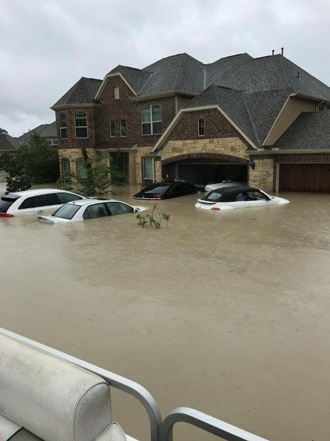

Don’t drive in flooded areas
Floodwater can pose a drowning risk for everyone— regardless of their ability to swim. Swiftly moving shallow water can be deadly, and even shallow standing water can be dangerous for small children.

Exposure to contaminated floodwater can cause:
- Wound infections
- Skin rash
- Gastrointestinal illness
- Tetanus
The best way to protect yourself is to stay out of the water.
- Wash the area with soap and clean water as soon as possible. If you don’t have soap or water, use alcohol-based wipes or sanitizer.
- Take care of wounds and seek medical attention if necessary.
Avoid electrical hazards inside or
outside your home.
Shut off electrical power and natural gas or propane tanks in your home to avoid fire,
electrocution, or explosions.
NEVER touch a fallen power line. Call the power company to report fallen power lines.
Do not drive through standing water if downed power lines are in the water.

Prevent injuries.
Floodwater may contain sharp objects, such as glass or metal fragments, that can cause injury and lead to infection. Prompt first aid can help heal small wounds and prevent infection.